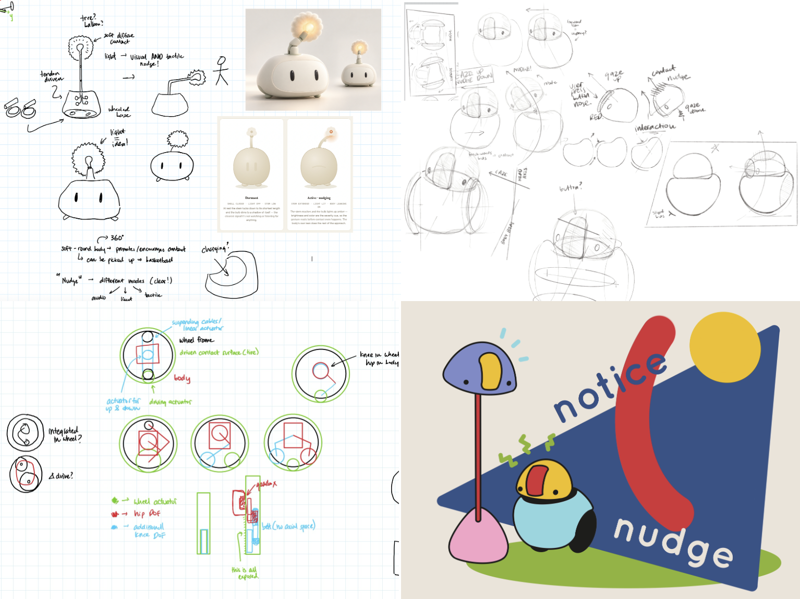
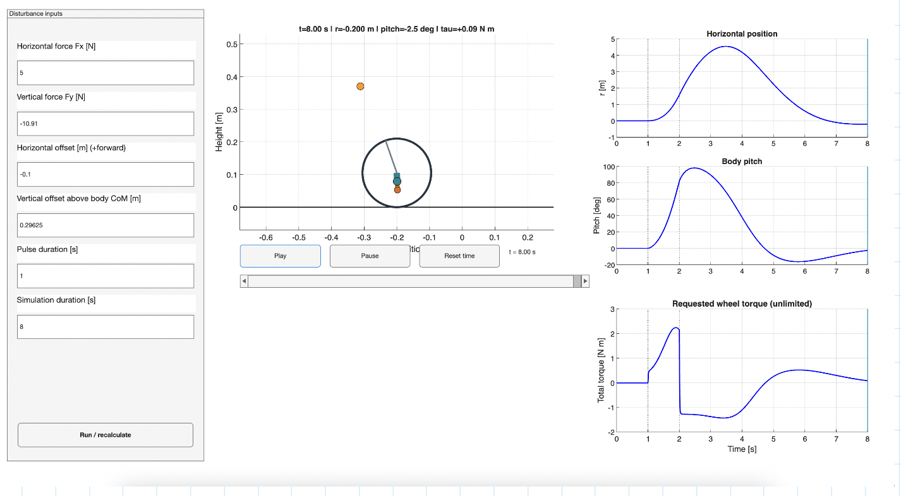

Responsibilities
Mechanical & Industrial
Team Website
01
TL;DR
01
Concept development
Compared locomotion and interaction concepts to define Nudge’s
wheeled-biped architecture
.

02
03

02
Technical Documentation
01 / Technical note
↗
Concept Development & Design Decisions
Comparing architectures and explaining the decisions behind Nudge’s design.
02 / Technical note
↗
Modeling & Actuator Sizing
Modeling wheel and leg dynamics to estimate torque requirements and size actuators.
03 / Technical note
↗
Kinematic Linkage Design
Creating the gravity compensating and sensitive contact mechanisms behind Nudge's expressions and tap.
04 / Technical note
↗
General Mechanical Design
Designing Nudge’s packaging, structure, and safe-contact mechanisms.
05 / Technical note
↗
Industrial Design & Art
Developing the form, visual identity, and expressive motions of Nudge and Notice.